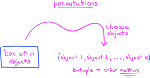
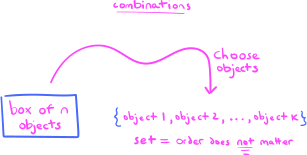
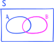
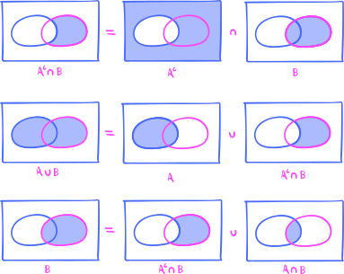
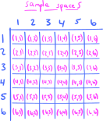
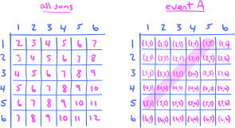
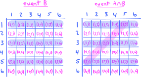
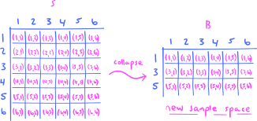
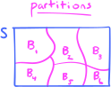
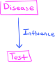

3. Rules of probability#
Having learned the basic theory of probability in the previous chapter, in this chapter we begin developing various tools and techniques that will allow us to actually compute probabilities.
The first two sections in this chapter deal with techniques for counting, and are more widely applicable than just computing probabilities. Indeed, you might have seen some of this material in a course in discrete mathematics or combinatorics. We will treat this material with a much lighter touch than most elementary probability textbooks, believing that these techniques are not as important as many those texts might lead you to believe.
The rest of the chapter is devoted to probability theory in which, among other things, we introduce the fundamental topics of conditioning and independence, as well as the Law of Total Probability and Bayes’ Theorem. All four of these topics are absolutely crucial to the rest of the book, and we will return to them again in the context of random variables in a later chapter.
3.1. The Product and Sum Rules for Counting#
The main rules that we will use for counting are:
Theorem 3.1 (The Product Rule for Counting)
Suppose that a procedure can be broken down into a sequence of two tasks. If there are \(m\) ways to do the first task, and for each of these ways of doing the first task there are \(n\) ways to do the second task, then there are \(mn\) total ways to do the procedure.
Theorem 3.2 (The Sum Rule for Counting)
If a procedure can be done either in one of \(m\) ways or in one of \(n\) ways, where none of the set of \(m\) ways is the same as any of the set of \(n\) ways, then there are \(m+n\) ways to do the procedure.
Let’s get some practice:
Problem Prompt
Do problem 1 on the worksheet.
3.2. Permutations and combinations#
The Product Rule for Counting tells us how to count the number of ways to accomplish a task that can be broken down into a sequence of smaller, sub-tasks. One very simple (yet very important) example of such a task is choosing, in order, a collection of objects from a larger collection of objects. Such collections have names:
Definition 3.1
An ordered collection of \(k\) distinct objects is called a permutation of those objects. The number of permutations of \(k\) objects selected from a collection of \(n\) objects will be designated by the symbol \(P^n_k\).
Mathematically, a permutation consisting of \(k\) objects is often represented as \(k\)-tuple. This is because, for a permutation, the ordering of the objects matters. But order matters in \(k\)-tuples as well; for example, the \(2\)-tuple \((1,2)\) is not the same as the \(2\)-tuple \((2,1)\).
{kind=link}
We will often need to count permutations:
Theorem 3.3 (Formula for Counting Permutations)
For \(0 \leq k \leq n\), we have
Note: Remember the convention that \(0! = 1\).
Why is this true? Remember that a permutation of \(k\) objects may be represented as a \(k\)-tuple:
But then, written like this, we see that counting the number of permutations is a simple application of the Product Rule for Counting. Indeed, the number of permutations is the product
which is equal to
Problem Prompt
Do problem 2 on the worksheet.
The partners to permutations are defined in:
Definition 3.2
An unordered collection of \(k\) distinct objects is called a combination of those objects. The number of combinations of \(k\) objects selected from a collection of \(n\) objects will be designated by the symbol \(C^n_k\) or \(\binom{n}{k}\).
Permutations are represented as \(k\)-tuples because order matters. But for combinations, order does not matter, and therefore they are often represented as sets:
{kind=link}
Theorem 3.4 (Formula for Counting Combinations)
For \(0 \leq k \leq n\), we have
Note: Remember the convention that \(0! = 1\).
To see why this formula works, think of the process of forming a permutation as a two-step process:
Choose a combination.
Rearrange the objects in your chosen combination to fit the order of your desired permutation.
Then, it follows from the Product Rule for Counting that the total number of permutations, \(P^n_k\), is the product of the number of ways to accomplish the first task with the number of ways to accomplish the second task. In an equation, this means:
Indeed, on the right-hand side of this equation you see \(C^n_k\), which is the number of ways to accomplish the first task, while \(P^k_k\) represents the number of permutations of \(k\) objects selected from a total number of \(k\) objects (which are just rearrangements of those objects). But we have
which means that we must have
But this is exactly the desired formula for \(C^n_k\)!
Problem Prompt
Do problem 3 on the worksheet.
3.3. The Sum Rule for Probability#
We now transition back to talking about probability theory.
Theorem 3.5 (The Sum Rule for Probability)
The probability of the union of two events \(A\) and \(B\) is
In particular, if \(A\) and \(B\) are disjoint, then
So, the Sum Rule for Probability tells you how to compute the probability of a union of two events. We will see later a different rule that tells you how to compute the probability of an intersection.
In the very special case that the sample space \(S\) is finite and the probability measure \(P\) is uniform, I claim that the Sum Rule for Probability is “obvious.”
Let me explain.
Notice that we have
where the vertical bars denote cardinalities. Can you see why this is true? If you want to count the number of points in the union \(A\cup B\), then you count all the points in \(A\), then all the points in \(B\), but you have to subtract out the points in \(A\cap B\) because they would be double counted (this is called inclusion-exclusion).
Now, if we divide both sides of (3.1) by the cardinality \(|S|\), we get
But because we are working with a uniform probability measure \(P\), each of these four ratios are the probabilities:
Simple!
But what if \(P\) is not uniform? Why is the Sum Rule still true?
To explain, imagine the usual Venn diagram with the events \(A\) and \(B\) inside the sample space S:
{kind=link}
The argument that I am about to give depends crucially on the two equations
where for brevity I’ve written \(A^c\) for the complement \(S\smallsetminus A\). If you’re not quite sure why these equations are true, here’s a visual explanation using Venn diagrams:
{kind=link}
The first row of this figure simply shows you how to visualize the intersection \(A^c \cap B\), and the second two rows explain the fundamental equations (3.2) above. The crucial point to notice is that the two pairs of sets on the right-hand sides of the equations (3.2) are disjoint, which you can see easily from the Venn diagrams. Thus, if we apply \(P\) to both sides of these equations, we get:
Now subtract these equations to get
which we may rearrange to get the Sum Rule:
And there we have it! This explains why the Sum Rule works.
Problem Prompt
Have a go at problems 4 and 5 in the worksheet.
3.4. Conditional probability#
So far, we have studied just plain probabilities \(P(A)\). Intuitively, this value represents the probability that you expect the event \(A\) to occur, in the absence of any additional given information. But what if you actually had additional information that might affect the probability of the event occurring? How would you update the probability \(P(A)\)?
Let’s do an example. Suppose that you roll two fair, six-sided dice. The sample space \(S\) in this scenario is the collection of all ordered pairs \((\text{roll 1}, \text{roll 2})\). Here’s a picture:
{kind=link}
Since there are six possibilities for each roll, according to the Product Rule for Counting, the cardinality of the sample space is \(6^2 = 36\). And, since each die is fair, any number is equally likely to be rolled as any other, and hence the probability measure is uniform: Each possible pair of numbers has probability \(1/36\) of being rolled.
Now, suppose I ask you to compute the probability of the event \(A\) that your two rolls together sum to 6. This computation is pretty easy, since you can just count the possibilities by hand:
We may visualize the situation like this:
{kind=link}
The figure on the left shows all sums for all possible pair of rolls in the sample space \(S\), while the figure on the right shows the event \(A\). Since the probability is uniform, we have
However, what if I now tell you that your first roll is an odd number—does this affect your expected probability for \(A\)?
It does!
To see why, let’s first give the event that the first roll is odd a name, say \(B\). Then we’re not interested in the full event \(A\) anymore, since it includes the rolls \((4,2)\) and \((2,4)\). Rather, we are now interested in the intersection \(A\cap B\):
{kind=link}
The intersection \(A\cap B\) is where the blue horizontal highlights (representing \(B\)) intersect the magenta diagonal highlight (representating \(A\)). But there are three pairs of rolls in this intersection, and the cardinality of \(B\) is \(18\), so our probability of \(A\) occuring changes from \(P(A) = 5/36\), to \(3/18\). But notice that \(3/18\) is the same as the ratio
These considerations suggest the following fundamental definition:
Definition 3.3
Let \(A\) and \(B\) be two events in a probability space \(S\). Then the conditional probability of \(A\) given \(B\) is the ratio
provided that \(P(B) >0\). The event \(B\) is called the conditioning event, and the conditional probability \(P(A|B)\) is often called a probability conditioned on \(B\).
In plain language, the conditional probability \(P(A|B)\) represents the probability that \(A\) will occur, provided that you already know that event \(B\) has occurred. So, in our die-rolling scenario above where \(A\) is the event that the sum of the two rolls is \(6\), and \(B\) is the event that the first roll is odd, we would write
Conceptually, a conditional probability \(P(A|B)\) may be thought of as collapsing the full probability space \(S\) down to the event \(B\). In our dice-roll scenario above, this collapse looks like:
{kind=link}
Problem Prompt
Do problems 6 and 7 on the worksheet.
3.5. Independence#
Sometimes the outcomes of two experiments or processes do not affect each other. For example, if I flip a single coin twice, then we would expect that the outcome of the first flip should have no effect on the outcome of the second flip. Such events are called independent, and they are defined formally in:
Definition 3.4
Two events \(A\) and \(B\) in a sample space are independent if
The definition of independence technically only applies to two events, but there’s an obvious generalization of the definition to an arbitrary number of events. Indeed, we say that events \(A_1,A_2,\ldots,A_n\) are independent if
Here’s a test for independence that involves conditional probabilities:
Theorem 3.6 (Conditional Criterion for Independence)
Two events \(A\) and \(B\) with nonzero probability are independent if and only if
Do you see why this criterion follows immediately from the definition (3.4) of independence and the definition of conditional probability? See if you can work it out for yourself.
Think about what the first equation in (3.5) is attempting to tell you: It says that the probability that \(A\) occurs, given that \(B\) has occurred, is just the original probability \(P(A)\). This means that whether \(B\) has occurred or not has no effect on whether \(A\) occurs. This captures precisely the intuitive idea that the formal definition of independence (3.4) is attempting to get at.
Problem Prompt
Do problems 8 and 9 on the worksheet.
3.6. The Product Rule for Probability#
Just as the Sum Rule for Probability expresses the probability of a union \(A\cup B\) of two events as a sum of probabilities, the next rule expresses the probability of an intersection \(A\cap B\) as a product of probabilities:
Theorem 3.7 (The Product Rule for Probability)
The probability of the intersection of two events \(A\) and \(B\) is
Notice that the equations in (3.6) are immediate consequences of the definition of conditional probability, so there’s not really any mystery for why they hold.
3.7. The Law of Total Probability and Bayes’ Theorem#
A partition of a sample space \(S\) is exactly what it sounds like: It’s a division of the sample space into a collection of disjoint subsets. For example, the six subsets \(B_1,B_2,\ldots,B_6\) of the sample space \(S\) in the following Venn diagram form a partition:
{kind=link}
There are two things required of a partition: All the sets in the partition must be pairwise disjoint, and their union must be the entire sample space \(S\).
Using the concept of a partition, we may state the following law of probability:
Theorem 3.8 (The Law of Total Probability)
Suppose that \(\{B_1,B_2,\ldots,B_n\}\) is a partition of a sample space \(S\), where each \(B_k\) is an event. Then for any event \(A\), we have
Why is this law true? Notice first that
and that the sets in the union on the right-hand side are pairwise disjoint. (Why?) Therefore, if we apply the probability measure \(P\) to both sides of this last equation, we get
But \(P(A\cap B_k) = P(A|B_k) P(B_k)\) by the Product Rule for Probability, and hence we get
which is what we wanted to prove.
Often times, the Law of Total Probability is applied when only two events are involved. In this case, the formula simplifies considerably:
Theorem 3.9 (The Law of Total Probability (Two-Event Version))
Let \(A\) and \(B\) be two events in a sample space \(S\). Then
where I’ve written \(B^c\) for \(S \smallsetminus B \).
Indeed, this version of the Law of Total Probability is the special case of the first where the partition is \(\{B,B^c\}\). Check this!
Problem Prompt
Do problem 10 on the worksheet.
Finally, to motivate the last result in this chapter, let’s consider the following real-world scenario:
The Canonical Example of Bayes’ Theorem
Suppose that a test has been devised to detect a certain disease. Moreover, suppose that:
The disease affects \(0.1\%\) of the population.
The test does not produce any false negatives.
The test produces false positives at a rate of \(5\%\).
Given that a randomly selected individual tests positive for the disease, what is the probability that they have it?
In order to answer this question, we first need to set up a probability space that models the scenario. As a sample space \(S\), we would take the population of people under consideration. We assume that the probability measure \(P\) is uniform over the population. Then, the two events in \(S\) that we are concerned with are the events \(D\) and \(T\), where \(D\) consists of those people that have the disease and \(T\) consists of those people who tested positive.
Our first goal is to take the three statements in bullet points and turn them into probability statements involving the events \(D\) and \(T\). Since the probability measure \(P\) is uniform, the percentages given in the problem statements are probabilities. So, to say that the disease affects only \(0.1\%\) of the population means that
The test produces a false negative when it says that a person does not have the disease when they actually do have the disease. The problem statement tells us that this never happens, so we have \(P(T^c | D) = 0\), which is equivalent to
The test produces a false positive when it says that a person has the disease when they actually do not have the disease. This happens at a rate of \(5\%\), so we have
Finally, the goal of the problem is to compute the conditional probability \(P(D|T)\).
It is helpful to conceptualize a causal relationship between the two events \(D\) and \(T\), or a “direction of influence.” It is certainly the case that the presence of the disease influences the outcome of the test, while it is difficult to imagine that the outcome of the test could influence whether or not a person has the disease. Thus, the direction of influence flows from \(D\) to \(T\), which we might depict graphically as:

{kind=link}
This problem involves reasoning about the events \(D\) and \(T\). Reasoning that begins with \(D\) and flows downward toward \(T\) in the direction of influence is sometimes called causal reasoning; in the other direction, reasoning that begins with \(T\) and flows upward toward \(D\) in the opposite direction of influence is sometimes called evidential reasoning. In this language:
The event \(T\) is called the evidence and is said to be observed. The event \(D\) is called hidden or latent.
Determining the conditional probability \(P(T|D)\) is part of causal reasoning, since it begins with \(D\) as a given.
Determining the conditional probability \(P(D|T)\) is part of evidential reasoning, since it begins with \(T\) (the evidence!) as a given.
Now, the problem statement gives us \(P(T|D)=1\) and asks us to compute \(P(D|T)\). Thus, we need a tool that allows us to reverse causal reasoning and turn it into evidential reasoning. This tool is precisely Bayes’ Theorem!
Theorem 3.10 (Bayes’ Theorem)
Let \(A\) and \(B\) be two events in a sample space \(S\) with \(P(B)>0\). Then
The proof of Bayes’ Theorem is a complete triviality and follows immediately from the definitions. The real value of the theorem derives not from it being a “difficult” theorem, but rather from the fact that it allows us to reverse the direction of conditioning and to thereby reverse causal reasoning to evidential reasoning (and vice versa). Applying Bayes’ Theorem to our situation, we would write:
Thus, to compute \(P(D|T)\), we just need to compute the three probabilities on the right-hand side. We will do precisely this in the next problem. You will probably find the answer surprising.
Problem Prompt
Do problem 11 on the worksheet.